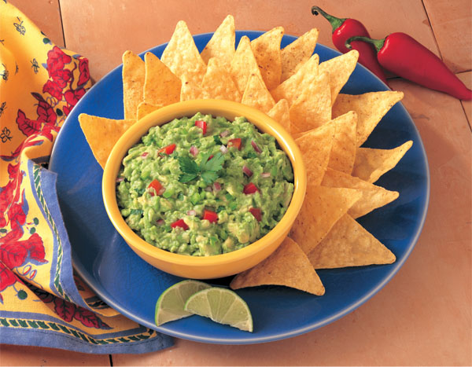
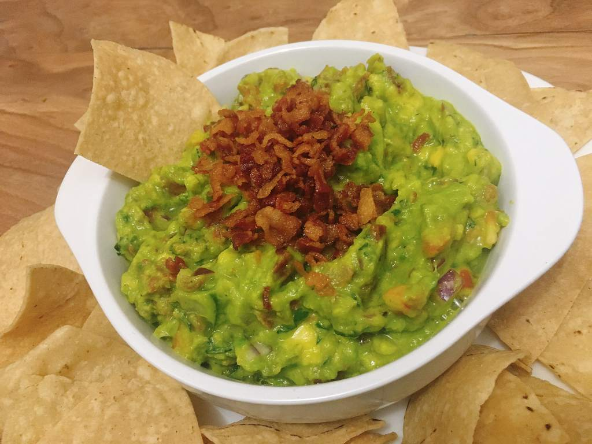

Checa algunas recetas que aprenderás:

Guacamole estilo Ayuquense
Ingredientes:
- 2 aguacates maduros
- 1/4 de cebolla
- 1 pizca de cilantro
- Jugo de 1 limón
- Un toque de ajo
- Decora con jitomate picado al gusto

Guacamole estilo Sayayin
Ingredientes:
- 2 aguacates maduros
- 1/4 de cebolla
- 1 pizca de Kame Hame Ha
- Jugo de 1 naranja
- 3 semillas de ermitaño
- 2 cucharadas de crema
- Decora con jitomate picado al gusto

Guacamole con Tocino
Ingredientes:
- 2 aguacates maduros
- 1/4 de cebolla
- 50 grs de tocino frito
- Jugo de 1 limón
- Un toque de ajo
- Chile serrano y jitomate al gusto